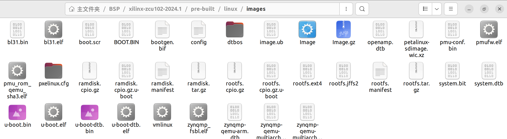

ZCU102初步-使用 Petalinux 基于 BSP 构建 Linux
前言
从上一篇从 0 开始构建 Linux 可以看出，有一些坑点和难点，可能最终难度上也会比较高，所以在对自定义需求不高的情况下，本篇提供一种基于 BSP 快速构建 Linux 的方式方法。
BSP
BSP 即板级支持包，是定义如何支持特定硬件设备、设备组或硬件平台的信息集合。其介于底层硬件和上层软件之间，目的是为了向上层软件屏蔽下层硬件。
做个类比的话，笔者认为 .xsa 文件就归属于 BSP
使用
- 依旧是基于 Petaliunx 2024.1，首先在官网下载 ZCU102 BSP，其位置在 Petalinux 下载界面滚轮下滑。
BSP 使用要通过 Petalinux 来进行，因此首先激活 Petalinux 环境。
source settings.shpetalinux-create -t project -s <BSP路径>，通过此命令即可使用下载好的 BSP 创建出对应的 Petalinux 工程。

- 里面的 Pre-build 即为预先编译好的 images，可以直接拿去用。如果要求不高，至此就已经结束了。

- 如果想进行一些自定义，里面也有 vivado 工程、也可以像前一篇一样进行 config、build。
TIPS
基于此 BSP，无需考虑上一篇最后提到的网卡问题，应该是开发人员已经解决了。
本博客所有文章除特别声明外，均采用 CC BY-NC-SA 4.0 许可协议。转载请注明来自 ForeverYolo的博客！
相关推荐


评论